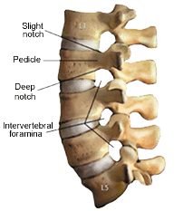

Tudo sobre a coluna vertebral.

Efectuam-se entre os corpos de duas vértebras justapostas.
Anfiartroses.
São constituídas pelas faces inferior e superior dos corpos vertebrais de duas vértebras adjacentes. O centro é deprimido em relação à periferia, que se encontra mais elevada. As faces dos corpos vertebrais apresentam uma fina lâmina cartilagínea que reveste a porção central. As vértebras cervicais apresentam nas porções laterais do corpo vertebral as articulações unco-vertebrais de Trolard entre as apófises semilunares e as chanfraduras de duas vértebras adjacentes.
Ligamentos interósseos. Também conhecidos por discos intervertebrais (Discus intervertebralis) têm a til forma de uma lente biconvexa, interpondo-se entre os corpos vertebrais de duas vértebras adjacentes. As duas faces do disco moldam-se intimamente às superfícies vertebrais.
A espessura dos discos intervertebrais varia em cada uma das regiões da coluna vertebral, sendo em média de 3,5 mm na região cervical, 5 mm na região dorsal e 9 mm na região lombar.
Nas regiões cervical e)ombar os discos são mais espessos adiante do que atrás, e na região dorsal mais espessos atrás, sendo estas diferenças de espessura que permitem explicar as várias curvaturas da coluna, no sentido ântero-posterior. A porção central dos discos intervertebrais é formada por uma substância gelatinosa e mole, situada mais perto da porção posterior da periferia do disco, o núcleo gelatinoso ou pulposo (Nucleus pulposus). É esbranquiçado na criança e toma-se amarelado à medida que o indivíduo vai envelhecendo, sendo constituído por feixes fibrosos, separados por tecido mucoso com células que são resquícios da corda dorsal.
A porção periférica dos discos intervertebrais é muito resistente e formada em parte por fibrocartilagem e em parte por lâminas fibrosas dispostas concentricamente, constituindo o anel fibroso (Anulus fibrosus).